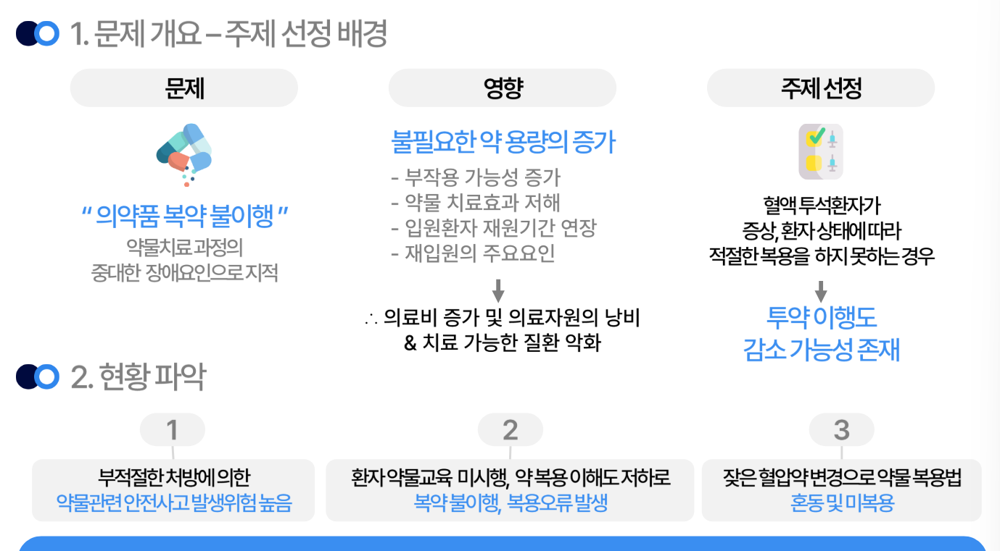
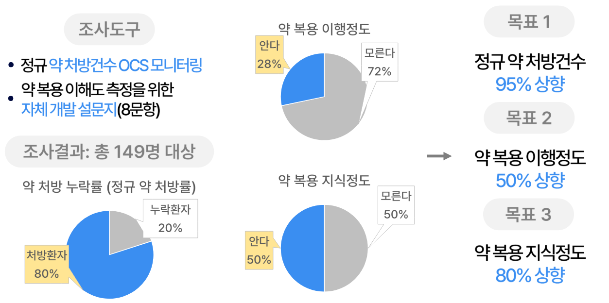
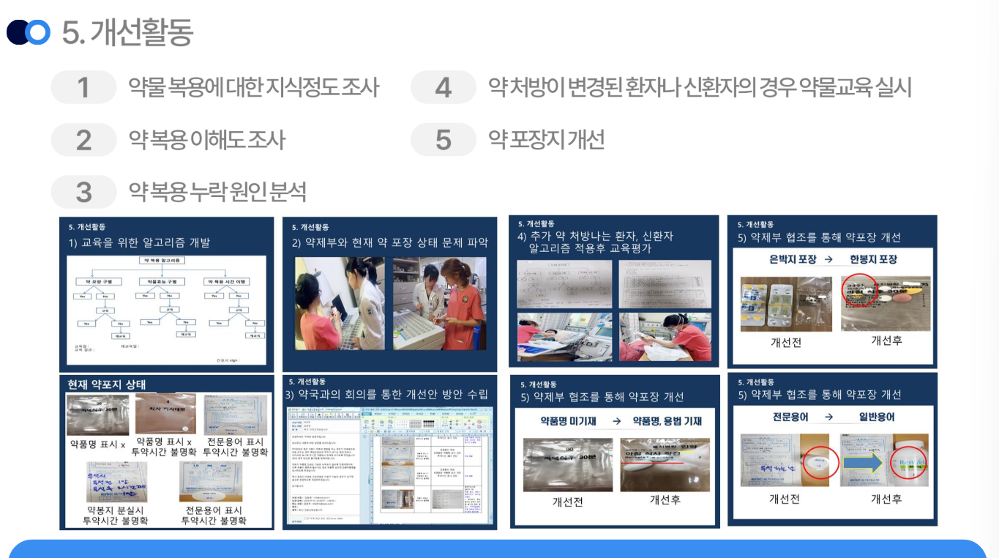
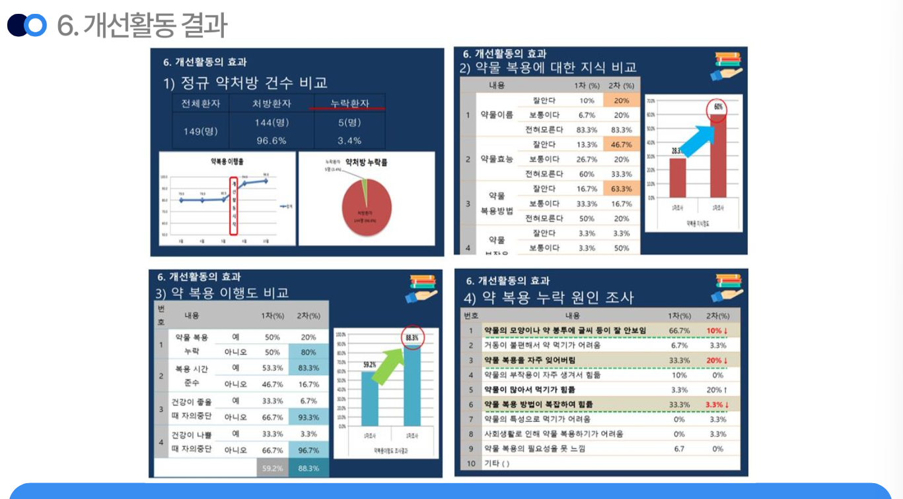
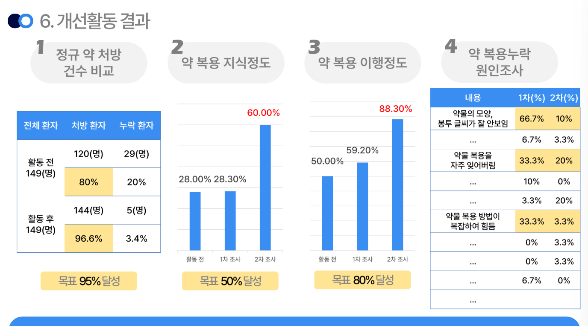
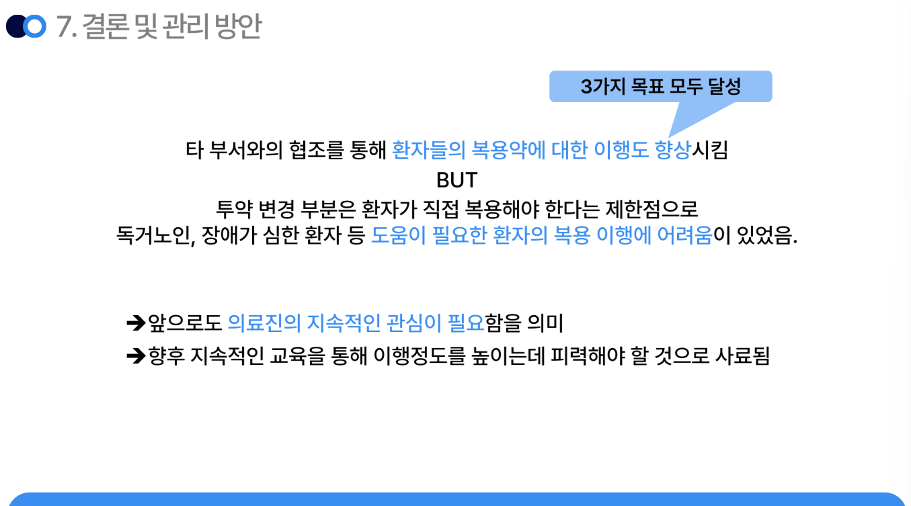

진행 기간: 2024년 1월 1일 → 2024년 1월 31일
🔎 의료의 질 향상을 위한 QI 조사
약물복용 이행도 향상활동 - 혈액 투석환자를 대상으로
문제 개요 및 현황 파악

- 환자들의 의약품 복약 불이행 다수 발생 = 약물치료 과정의 중대한 장애요인임.
- 불필요한 약 용량의 증가 ⇒ 의료비 증가, 의료자원 낭비, 치료가능한 질환 악화로까지 이어짐.
조사도구
- 정규 약 처방건수 OCS 모니터링
- 약복용 이해도 측정을 위한 자체 개발 설문지(8문항)

→ 설문지 결과에 따라 3가지의 정량적인 목표 설정함.
개선활동

- 노원을지대병원에서 실제로 해당 QI활동을 진행함.
- 약제부와 협의하여 현재 약 포장 상태를 파악하고, 약국과의 회의를 통해 개선안 방안을 수립함.


결론 및 관리 방안

- 타 부서와의 협조를 통해 약 복용 이해도를 실제로 증가 시킬 수 있었음.
- 그러나 직접 복용해야 한다는 제한점으로 도움이 필요한 환자의 경우, 복용 이해에 어려움이 있음.
💡 깨달은 점
- 병원에서 진행하는 QI 활동또한, 늘 목표수치에 다다르지 못함.
- 환자들을 위한 의료의 질 향상 활동을 진행하기 위해서는 해당 병원의 환자들에 대한 데이터가 필요한데, 이 부분에 대해 정보가 부족하다고 느낌.
- 단순히 사례 분석에 그쳤지만, 해당 병원의 환자 데이터를 받아 데이터 분석 후 활동 기획을 한다면 어떨지 궁금해짐.